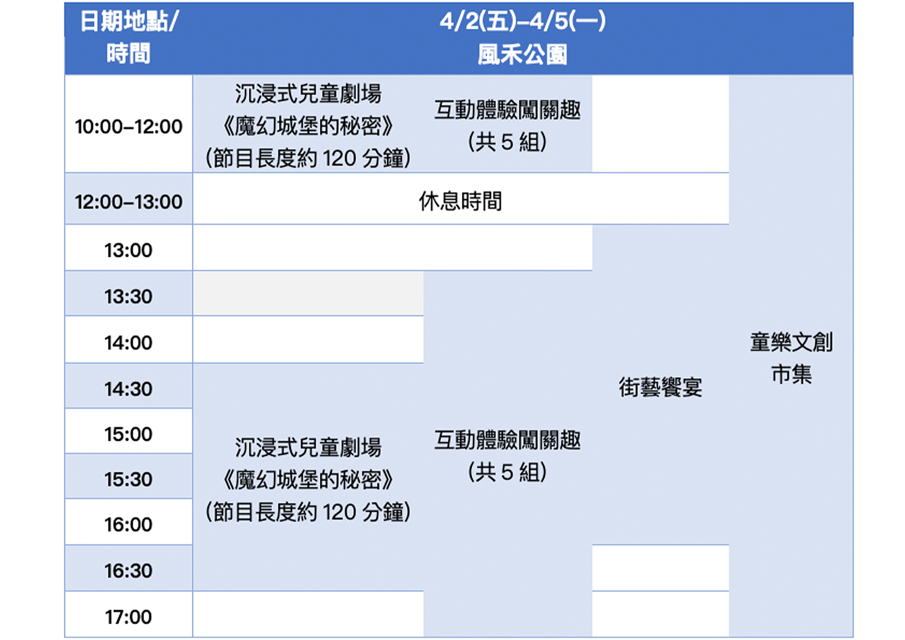

最新消息

首屆「桃園兒童藝術節」開跑 四大主題特色活動 邀您嗨玩兒童節
「2021桃園兒童藝術節」將在4月2日至4月5日於桃園市風禾公園隆重登場囉！為推廣藝文融入親子生活及藝術教育，桃園市政府文化局自2011年起於每年暑假期間舉辦「桃園夏日親子藝術節」，而今年首度改於4月兒童節舉辦，並更名為「桃園兒童藝術節」，將在風禾公園打造一座「魔幻城堡遊樂園」。 首屆的「桃園兒童藝術節」突破傳統單一舞台觀賞演出的形式，融入「沉浸劇場」及「環境劇場」的概念，搭配風禾公園環境營造「魔幻城堡」與「動物森林」的氛圍，全新創作一齣「魔幻城堡的秘密」親子戲劇節目，節目製作團隊由曾任2018台中花博開幕表演編導組—呂濟寬、林聖加擔任编導，金曲獎最佳演奏專輯製作人獎—蔡興國，新生代舞台設計師—陳威光，劇場界知名服裝設計師—胡哲誠等人組成。 故事內容從小獅王萊恩的「魔幻城堡生日會」上，小巫女凱琪誤施魔法咒語開始，邀請大小朋友沉浸到戲劇故事中，到「動物森林」各角落的場景裡，隨著戲劇情節及演員的帶領，共同尋找分別代表夢想、誠實、互助、分享、勇氣的「魔法石」，最後齊聚大舞台魔幻城堡前，與故事角色共同解救魔幻城堡，一起揭開故事的結局。 除了主題戲劇演出外，更延伸故事情節設計5組「互動體驗闖關趣」，有結合音樂的《魔幻城音感棋盤》、直徑長達約3公尺大魔鏡讓親子拍照打卡的《童話誠實大魔鏡》、電力感應與單車融合的《綠野仙蹤單車遊》，以及小朋友喜愛的遙控越野汽車《越野汽車尋寶隊》與無人機《森林天空偵查員》等體驗設施，鼓勵兒童手腦並用，親子也能一同協力闖關。 另外，「街藝饗宴」每日共9組街頭藝術家輪番演出，包括音樂、魔術、雜技等不同藝術型態的表演，由全台優秀街頭藝人帶來精彩演出；每天還有10攤集結創意工藝、視覺藝術的「童樂文創市集」，現場也有兒童手作與美術DIY，適合任何年齡層的大小朋友前來體驗。 「2021桃園兒童藝術節」將於4月兒童節連假舉行，陪同親子一起歡度兒童節。活動期間配合防疫政策，提醒前來活動的民眾務必戴口罩、酒精消毒，保持適當社交距離，相關活動訊息可上 活動官網 或 桃演本舖 臉書粉絲專頁查詢。
2021桃園兒童藝術節活動節目表
